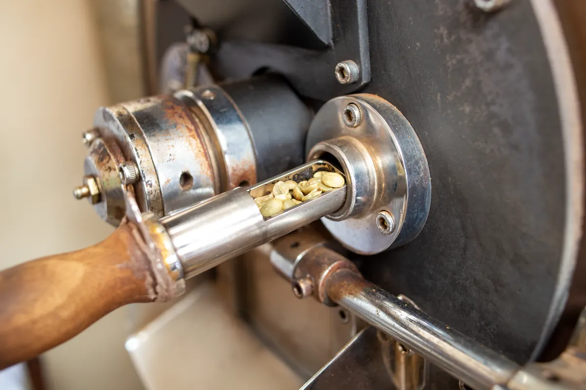

Sales Advisor
OPPO
Pengalaman di bidang penjualan yang turut membentuk kemampuan komunikasi dan interaksi dengan pelanggan.
1 tahunPersonal portfolio / Barista enthusiast | Service professional
Saya Ivan. Pribadi yang senang bekerja bersama tim, memiliki pengalaman di bidang penjualan dan pelayanan, serta ingin terus berkembang di dunia barista.

Saya senang bekerja bersama tim dan berinteraksi dalam lingkungan kerja.
Perjalanan saya membawa pengalaman di bidang penjualan, pekerjaan barista, dan pengawasan SPBU. Dari berbagai pengalaman tersebut, saya semakin tertarik mengembangkan kemampuan di dunia barista dan pelayanan.
Lihat perjalanan profesionalPengalaman di beberapa lingkungan kerja membentuk cara saya berkomunikasi, melayani, dan bekerja bersama tim.
OPPO
Pengalaman di bidang penjualan yang turut membentuk kemampuan komunikasi dan interaksi dengan pelanggan.
1 tahunAngkringan Pusat
Pengalaman sebagai barista dan bagian dari ketertarikan saya untuk terus berkembang di bidang kopi dan pelayanan.
10 bulanSPBU
Pengalaman profesional dalam posisi pengawasan di lingkungan operasional SPBU.
3 bulanDurasi kerja ditampilkan sesuai informasi yang tersedia.
Saya ingin terus mengembangkan kemampuan di bidang barista, sambil membawa pengalaman komunikasi dan pelayanan ke setiap kesempatan kerja.
Minat profesional Coffee & Barista / Hospitality & pelayanan

Apabila Anda ingin berdiskusi mengenai kesempatan kerja atau mengenal saya lebih jauh, silakan hubungi saya melalui kontak berikut.